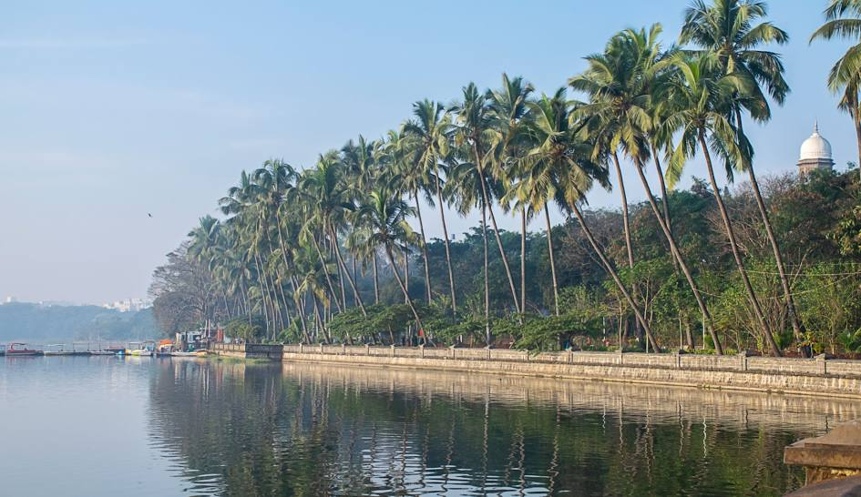

Rajeshwar Temple akola Raj Rajeshwar Temple in Akola, Maharashtra is a famous Shiva temple |

Balaji Temple akola Here are the idols of Shri Hanumanji, Shri Ram Darbar, Shri Radhakrishna and Shri Shiv Parivar. |
 Akola fort
Akola fortAkola fort also called the Asadgad Akola Fort along with Narnala and Akot forts is the major fortification of Akola district. |
 Bhavani Mata Temple Patur
Bhavani Mata Temple Patur
Bhavani mata one of the famous temples of patur.Renu of Patur is known as Jagurt Devasthan. This place of Renuka, |

Renuka Mata temple
256 staris of these temple.Patur is a village of historical importance in Akola district. |
 Balapur Fort
Balapur FortBalapur was an important military station during the Mughal period, |
 x
Nanasaheb Wada patur x
Nanasaheb Wada patur,Patur city is identified by names as “Nanasaheb’s Patur’ or ‘Patur Shahababu’. |
 Anandeshwar palace lasur
Anandeshwar palace lasurof Maharashtra is the Anandeshwar Temple at Lasur village |
 Gaigoan Temple
Gaigoan TempleIt has a panchmukhi Mahadeo temple at the centre of the village. |
 Rudrayani Temple
Rudrayani TempleIt is said that Bhagavan Ramachandra came here. It is 14th temple of Adi Shakti. |
 Kholeshwar Temple
Kholeshwar Temple It was built by Rani Laxmi in the Rashtrakuta Dynasty |
Gaigoan Temple 90 km from Akola near Sonala town. It is on the bank of Waan River and Hanuman Sagar |